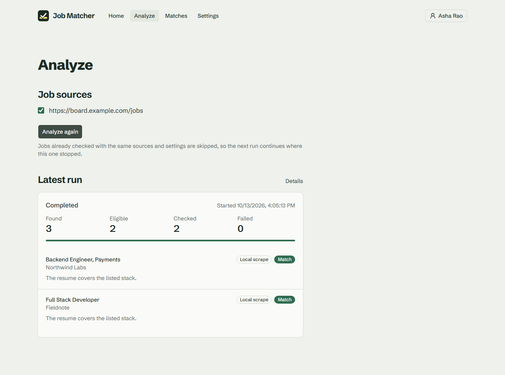
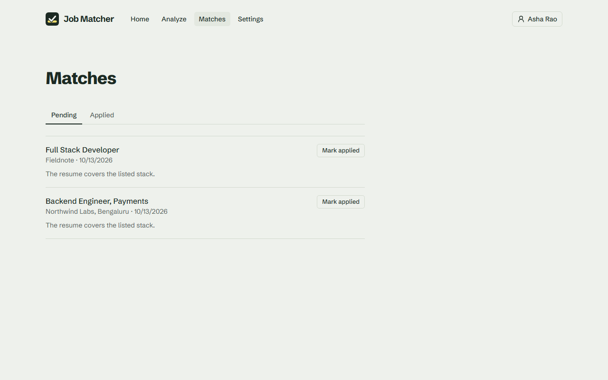

Every new job listing, read against your resume.
Job Matcher watches the job boards you follow, drops the listings outside your experience and cities, and has an LLM check the rest against your resume. You get a short list, with the reason behind every verdict.
curl -fsSL https://raw.githubusercontent.com/Karthik-beta/AI-Job-Resume-Matcher/master/install.sh | shirm https://raw.githubusercontent.com/Karthik-beta/AI-Job-Resume-Matcher/master/install.ps1 | iexFree and open source under the MIT license. It runs in Docker on your own computer, and its demo mode needs no API keys.
Example run
- Found
- 32
- Eligible
- 7
- Checked
- 5
- Matches
- 2
- Senior Backend Engineer, dropped: Senior is in the title
- Frontend Intern, dropped: Intern is in the title
- Staff Software Engineer, dropped: asks for 10 or more years
- Data Engineer II, dropped: based in Gurugram
- Product Designer, dropped: the title has neither Engineer nor Developer
- Engineering Manager, Growth, dropped: asks for 8 or more years
- Software Engineer, Integrations, eligible, waits for the next run
- Senior Site Reliability Engineer, dropped: Senior is in the title
- iOS Engineer, dropped: based in London
- QA Automation Engineer, dropped: based in Pune
- Software Engineer, Infrastructure, dropped: based in Berlin
- Principal Engineer, dropped: asks for 12 or more years
- Android Developer, dropped: based in Hyderabad
- Data Analyst, dropped: the title has neither Engineer nor Developer
- Senior Product Manager, dropped: Senior is in the title
- Machine Learning Engineer, dropped: based in Mumbai
- Software Engineer, Billing, eligible, waits for the next run
- DevOps Engineer, dropped: based in Chennai
- Technical Writer, dropped: the title has neither Engineer nor Developer
- Security Engineer, dropped: asks for 7 or more years
- Junior Frontend Developer, dropped: asks for under a year
- Solutions Engineer, dropped: based in Singapore
- Graduate Software Engineer, dropped: asks for under a year
- Database Reliability Engineer, dropped: based in Gurugram
- Customer Support Engineer, dropped: based in Pune
- Lead Backend Engineer, dropped: asks for 8 or more years
- Mobile Engineer, React Native, dropped: based in Hyderabad
Backend Engineer, Payments
Northwind Labs, Bengaluru
Asks for 2–4 years with Node.js and PostgreSQL. The resume shows three years building NestJS services on Postgres.
The resume here is a backend engineer’s, with four years of experience. Their filters ask for 2–5 years, Bengaluru or remote, and a title with Engineer or Developer but not Senior or Intern. Choose a checked title to read its verdict.
- Dropped by the filters
- No match
- Match
- Waits for the next run
How a run works
-
32 found
Read your job boards
Add Greenhouse, Lever, Ashby, SmartRecruiters or Recruitee boards, any careers page, or a search for a role. Boards are read through their public APIs, which costs nothing. Other careers pages are scraped with Firecrawl, and a search finds the past week’s ads on those boards.
-
7 eligible
Filter before reading
Listings outside your years of experience, your cities or your title keywords are dropped before any job page is opened. One quick model request can also rank the remaining titles against your resume, so only likely fits are read.
-
5 checked
Check against your resume
Each job ad goes to an LLM with your resume. It answers Match or No match, with a one-sentence reason you can check. A run checks 5 jobs by default, or up to 20, and the next run picks up where this one stopped.
-
2 matches
Save and notify
Matches go to your list, where you mark them applied. Connect a Discord channel and each match is posted there too. Turn on automatic checks and runs start on their own, as often as every 15 minutes.
The app


What it takes to run
A computer with Docker
Docker Desktop on Windows, macOS or Linux, or Docker on a Raspberry Pi 4 or 5. About 2 GB of free memory and 3 GB of disk.
Two API keys, or none
Demo mode needs no keys and runs the whole app on built-in sample pages. Live mode needs an OpenRouter key for the checks, which cost a fraction of a cent per job, and a Firecrawl key for scraping. Its free plan covers 1,000 pages a month, and runs keep a reserve so a schedule can’t spend the month early.
Where your data goes
Your resume, sources and matches are stored in a Postgres database on your computer, and PDF resumes are read locally. In live mode, the resume text and each job ad are sent to OpenRouter for the check, and job pages are fetched through Firecrawl.
Run it on your computer
The installer checks for Docker, downloads Job Matcher into
~/job-matcher, generates its secrets and asks for the two keys. Press
Enter at both prompts for demo mode. It never asks for admin rights, and running it
again upgrades the app and keeps your data.
You can read the script first, or follow the self-hosting guide to run each command yourself.
curl -fsSL https://raw.githubusercontent.com/Karthik-beta/AI-Job-Resume-Matcher/master/install.sh | shirm https://raw.githubusercontent.com/Karthik-beta/AI-Job-Resume-Matcher/master/install.ps1 | iex- Open http://localhost:8080 and create an account.
- In Settings, add a careers page and a link to your resume.
- Press Analyze.
How it’s built
A TypeScript monorepo on Bun: Next.js and React for the web app, NestJS and Effect for the API and run worker, PostgreSQL with Prisma, and Redis with BullMQ.
- Failures are typed
- The matching pipeline is written with Effect, and every failure is a tagged error. A rejected API key stops the run, a blocked page fails only that job, and a Discord outage is only logged.
- Runs can’t double up
- The API only queues a run. The run id doubles as the BullMQ job id, and a per-user Postgres advisory lock stops two runs from overlapping.
- Scraping keeps to a budget
- Each run reads the Firecrawl plan’s remaining credits and keeps a reserve. Scheduled runs share an even daily allowance.
- No job is paid for twice
- Pages are cached in Postgres, and verdicts are keyed by a hash of the resume, sources, model and requirements, so a rerun skips work already done.
- Tested before it merges
- Over 50 test files with a 90% per-file line coverage gate, Playwright tests on fake providers, and CI that boots the full Compose stack and runs the installer against it.